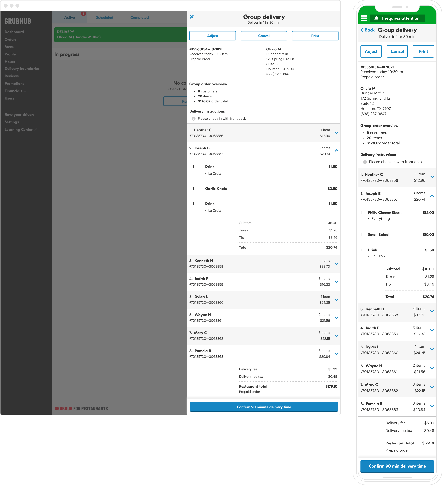
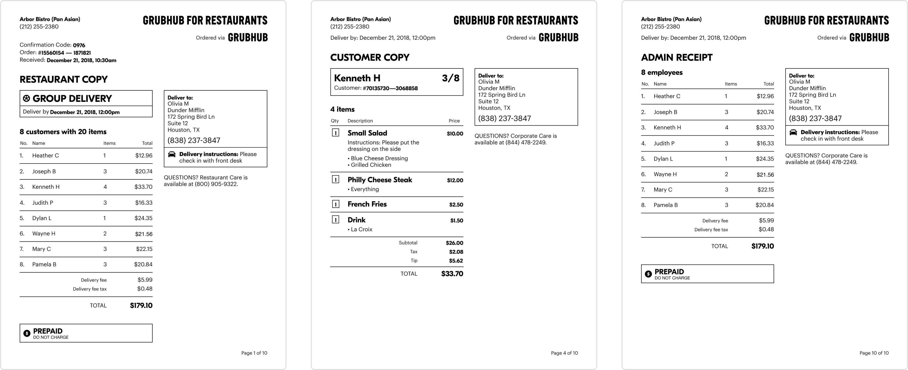
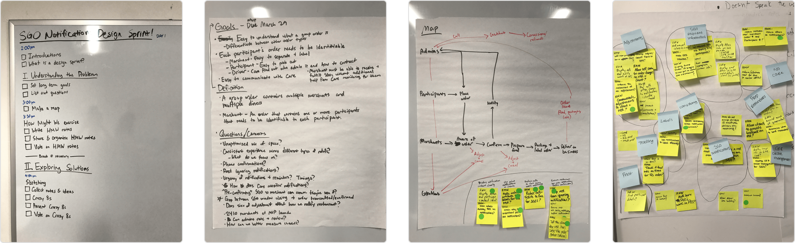
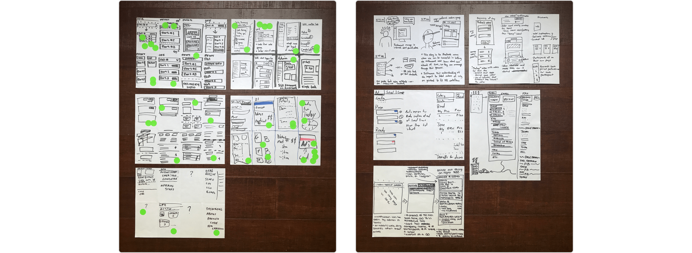
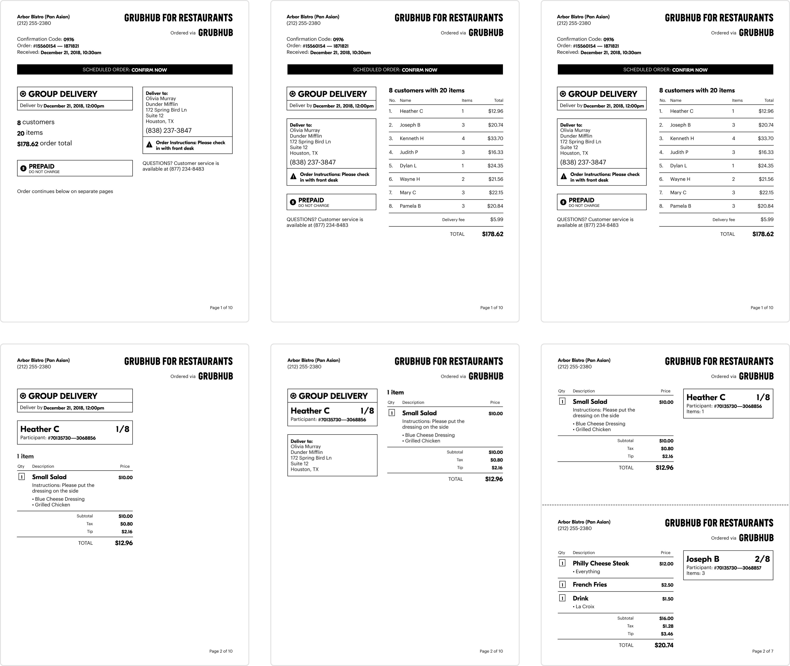
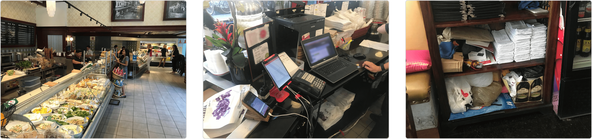
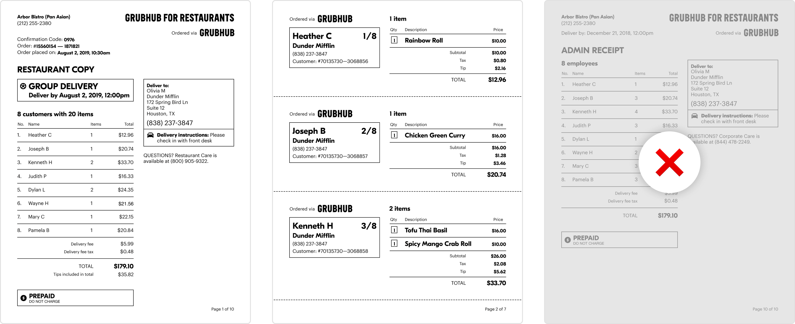
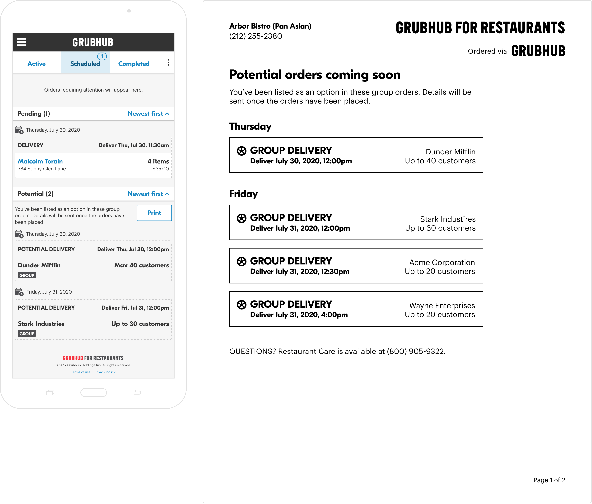

The challenge
Workplace dining has a TAM of $44.1B, with group ordering representing $14.9B of that. Grubhub had entered this market, but as a result of numerous acquisitions over the years, our corporate customers were spread across several brand platforms, each with varying functionality. It was impossible to serve all of their needs together.
We wanted to win the corporate market. In order to do that, we needed a product foundation that could scale with our business. We had to consolidate our various platform functionality into Grubhub for Restaurants, then migrate 100% of restaurants and corporate accounts, generating $56.9M GMV.
Grubhub for Restaurants, our core product, is the main interface by which restaurants manage their incoming orders, typically managed on an Android tablet provided by Grubhub. We built new functionality for restaurants to manage their corporate group orders alongside the rest of their Grubhub orders.
Grubhub for Restaurants is a responsive web app, so we designed for desktop and mobile experiences as well.
These are restaurant faxes (you read that right) for corporate group orders—you’d be surprised how much restaurants still rely on physical processes. To ensure order accuracy and maximize adoption, it was important our solution fit into restaurants’ existing workflows.
We also supported traditional thermal receipts, printing long copies for each group order, with space to tear between each customer.
Running a design sprint
We had one quarter to deliver a customer-facing MVP, and a monumental workload ahead of us.
I led a two-day design sprint to get alignment across product, engineering, and operations stakeholders. We started with a cloudy problem statement and fractured domain knowledge. Through a series of group activities, we aligned on a problem definition, high-level scope and user journeys, and began exploring early solutions. At the end of the sprint, we left energized and with focused direction to move towards.
Photos from day 1 of our design sprint: our agenda, aligning on definition, high-level journey mapping, and exploring a "How Might We?" exercise.
Day 2 involved Crazy 8’s, dot voting, and 3-panel solution storyboards.
Balancing a multi-sided marketplace
The next stage was to bring the ideas we explored into higher fidelity. This was a very collaborative process, with regular check-ins to include product, engineering, and operational leads across the project. We had candid conversations on how to balance needs between clients, restaurants, and our own business, as many decisions had second- and third-order consequences on other parts of the ecosystem.
For example, one key decision we made was around the timing of when a corporate group order would be sent to restaurants. Clients were able to schedule them ahead of time, and a group could hold as many as 50 individual employees—but we wouldn’t know the actual numbers, or the order’s contents, until they submitted their order. Naturally, restaurants need more time to prepare larger orders, and we wanted to allow restaurants to set their own lead times. However, we realized that this would create a fragmented marketplace experience for our corporate clients, and they’d have to manage a complex web of restaurant lead times to place their orders on time.
Since clients are ultimately the end customer, we decided to prioritize their experience, and remove as much friction as possible in their journey from signing up to placing an order. Using data we had on average group order size, restaurant prep times, and ETA accuracy of delivery, we aligned on a universal 90-minute heads up time for restaurants receiving corporate group orders.
Explorations on how to distinguish incoming group orders from other order types. We considered different ways to send the notification, the urgency at which we should surface new orders, and controls for filtering different order types.
Another key consideration was the fulfillment process of the orders themselves, as this required an entirely different workflow from standard, single-customer orders. Restaurants needed to understand that there were multiple customers, who needed their food packaged and labeled individually, but the entire group order would be delivered together. We would provide some onboard training on this front, but the product still needed to be effective on its own.
Restaurants have different workflows, and how information is presented to the front-of-house for entering into their POS is not always the same way that would be most effective for the kitchen to fulfill. We explored two key ways of breaking down an order contents: grouped by customer, versus by item. Ultimately, we settled on a single view of grouping by customer, as it reduced our scope, and better positioned the requirement for restaurants to package and label orders separately.
Explorations of the order details, where we would provide all information about the customers and contents of each order.
Though we were building a software solution, restaurants are physical workspaces, involving tangible goods and real-world interactions. In many cases, this means restaurants will use paper as an artifact to pass between any combination of the front-of-house, the kitchen, the customer, and to save for record-keeping. To suit restaurants’ existing workflows, we had to ensure our experience in the physical world would match our software experience.
Explorations of the fax and desktop print-outs, with considerations of how restaurants would use these pieces of paper, if and how they would change hands, and what information was most valuable to who throughout the order’s lifecycle.
Learning from the market
While we made informed decisions based on quantitative data and previous qualitative research, there were still many assumptions that we weren’t sure about. Due to significant environmental variation, it would be impossible to craft any scenarios that would compare to the complexity of the real world. We needed to learn from real-world data.
After the MVP launch, our UX research team conducted a study in the field, placing real corporate group orders with a handful of restaurants and seeing how they performed. We learned:
- Orders were being packaged individually, as we intended.
- Receipts were being attached in several different ways, depending on the form factor of the packaging.
- Restaurants found the delivery time easy to overlook. They would often highlight or re-write information on the print-outs to call things out.
- Restaurants found it tedious to add up each customer’s tips to calculate a total, and wanted that information more easily accessible.
- Restaurants hated how much paper we used. We assumed automatically separating customer copies would save time and make it easier (and more likely) for restaurants to label orders, but they were more concerned about the cost of paper and wasting it.
- Client administrators, the ones setting up the order and dealing with logistics on the client side, didn’t need the admin copy as they had an email record. Further, restaurants were often throwing this copy away as they didn’t understand its purpose.
- Some restaurants had trouble fulfilling larger group orders when they were busy.
Examples of how print-outs were used in the real world.
Photos showcasing the wide breadth of environmental factors. One restaurant had multiple ordering and prep stations, which made group orders difficult to facilitate (left). Our tablet was often one of many devices fighting for attention in a crowded front-of-house environment (middle). Another restaurant kept stacks of records, with years’ worth of orders printed up and piled on one another (right).
Iterating a solution
We took our findings and:
- Made the delivery time much larger on printouts.
- Added a consolidated tip total.
- Reduced content on the customer copies to the essential information, so multiple orders would fit on one page.
- Removed the admin copy, as people were finding it more confusing than valuable.
These changes made the content more relevant, used significantly less paper, and having smaller printouts made it easier for restaurants to attach them to the order.
The updated restaurant print-outs, designed using restaurant feedback.
Like any product, it’s never finished—we still had a long way to go after our MVP release. After launching, we:
- Added tools to help restaurants manage their capacity.
- Started building for Grubhub Delivery, as the MVP only supported restaurant self-delivery.
- Began executing a three-phase experience strategy: enable (expand foundation to get 100% of clients and restaurants migrated, and sunset old platforms; achieved in Q4 2020), improve (make the quality of the MVP experience better), and scale (add entirely new features to grow client base and win the market).
To mitigate the issue of restaurants cancelling orders that were too large—resulting in a ton of lost revenue, and a very bad customer experience—we built the ability for restaurants to set maximum group sizes.
Our MVP gave restaurants a 90-minute lead time, but customers could place orders up to a week in advance. We iterated a solution that gave restaurants a better window into group orders that were being set up for the week ahead.
Reflections
This project was a hugely complex technical feat that involved coordination across several teams. In order to launch as quickly as possible, we had to make sacrifices and say "no" to a lot of things. This is what makes product development hard.
This created cases of tech debt for our engineers, and experience debt for our restaurant partners. Like any debt, you pay it back with interest. What’s easy to brush off as, "we’ll fix it post-MVP" realistically stays in the product for a long time, sometimes permanently. Given our constraints, this is something we had to accept.
Making these tradeoffs wasn’t always easy, but understanding and staying aligned on our short, medium, and long-term goals allowed us to maintain focus on what was important.